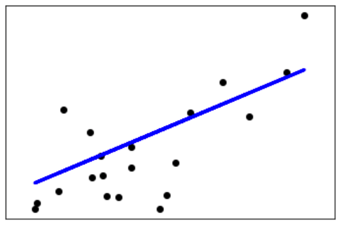

Week 1: Introduction to the Course
Links
Jupyter Notebook Installation
- OPTION 1: Anaconda > Jupyter Notebooks
$ conda install -c conda-forge notebook
- OPTION 2: If you already have Python installed, you can use a software management tool called
pip.
$ pip3 install jupyter
OR
$ pip3 install notebook
Running the Notebook Server
$ jupyter notebook
- The above command will start the notebook server (using a localhost at port 8888, typically). Some information about the notebook server will be printed in your terminal, including the URL of the web application.
- Navigate to http://localhost:8888. Then under the menu at the top right, click “New” > “Python 3”.
- In your blank notebook, your cursor should be in a new cell now. Cells are where you write Python code. You can click the “Run” button or press Shift + Enter to run a cell. Cells can be run in any order, but they should usually be written in such a way that you can run all the cells in succession when you are done developing in your notebook.
Diabetes Demo
- Let’s perform a simple regression on a diabetes dataset!
- Before we begin, we will need 3 powerful and awesome packages:
sklearn (contains our dataset and built in functions for a linear regression) matplotlib (visualization), numpy (statistical and mathematical operations). To import these packages (if you do not have them already), in your blank Jupyter Notebook cell, enter the following:
!pip install matplotlib
!pip install numpy
!pip install sklearn
- Now that we have those, let’s create a new cell.
- Import the packages we will be using by entering the following:
import matplotlib.pyplot as plt
import numpy as np
from sklearn import datasets, linear_model
from sklearn.metrics import mean_squared_error, r2_score
- Now it is time to load in and explore the diabetes dataset.
- In a new cell, enter the following:
# Load the diabetes dataset
diabetes_X, diabetes_y = datasets.load_diabetes(return_X_y=True)
print("X: ", diabetes_X)
print("y: ", diabetes_y)
- The above cell should have outputted lots of data that does not have inherent meaning.
- To provide some context, the X data contains an n x 10 array of data representing measurements obtained from diabetes patients where n = 442. The ten measurements obtained include age, sex, body mass index (BMI), average blood pressure, and other variables indicating the composition of blood (T-Cells, low-density lipoproteins, high-density lipoproteins, thyroid stimulating hormone, lamotrigine, and blood sugar level). Each of these 10 feature variables have been mean centered and scaled by the standard deviation times n.
- The target / response variable, y, is a quantitative measure of disease progression one year after baseline.
# Use only one feature
diabetes_X = diabetes_X[:, np.newaxis, 2]
# Split the data into training/testing sets
diabetes_X_train = diabetes_X[:-20]
diabetes_X_test = diabetes_X[-20:]
# Split the targets into training/testing sets
diabetes_y_train = diabetes_y[:-20]
diabetes_y_test = diabetes_y[-20:]
- We must split our dataset into a training set (the majority of the dataset) and a testing set (the last 20 rows in the dataset). The idea behind this is that we want our model to learn from some large chunk of data and then we want to use the linear relationship it has modeled between X and y to predict the y values for some unseen X array. If we can successfully yield meaningful predictions, the model can potentially be used on patients for whom diabetes progression is unknown.
- Let’s perform the linear regression using
sklearn’s nicely packaged linear regression library. NOTE: you do not have to understand how linear regression works. We will go over that next week!
# Create linear regression object
regr = linear_model.LinearRegression()
# Train the model using the training sets
regr.fit(diabetes_X_train, diabetes_y_train)
# Make predictions using the testing set
diabetes_y_pred = regr.predict(diabetes_X_test)
- The idea in the above code cell is to train our model using the large chunk of training data and then use the “fitted” model to obtain predictions for the unseen (“test”) data.
- Let’s try to quantify how good our model is with some common machine learning metrics for performance assessment:
# The coefficients
print('Coefficients: \n', regr.coef_)
# The mean squared error
print('Mean squared error: %.2f'
% mean_squared_error(diabetes_y_test, diabetes_y_pred))
# The coefficient of determination: 1 is perfect prediction
print('Coefficient of determination: %.2f'
% r2_score(diabetes_y_test, diabetes_y_pred))
- You don’t have to understand what any of the above numbers mean! Do not worry.
- Now, for the fun part… let’s visualize how our linear regression model did on the test set.
# Plot outputs
plt.scatter(diabetes_X_test, diabetes_y_test, color='black')
plt.plot(diabetes_X_test, diabetes_y_pred, color='blue', linewidth=3)
plt.xticks(())
plt.yticks(())
plt.show()
- Yayyyy! We did it!
- If things did not go so well, compare your code against this this source code.
- If all went well, you should see something like the following:

Code source: Jaques Grobler
License: BSD 3 clause